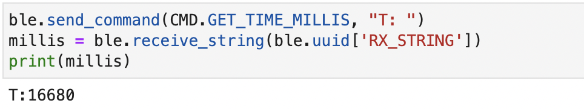

Lab 3 Time of Flight Sensors
The purpose of this lab was to gain familiarity with time of flight sensors, one of the first sensors that we will equip our robot with.
I2C Setup
Since we will be using 2 TOF sensors, we have to make sure that we are able to properly process and distinguish the data received from each TOF. The address of one of the sensors is already hardwired on the Artemis, so we must come up with a way to distinguish the two sensors being used. We can either change the address on the software interface or make use of the XSHUT pin on the sensor. The XSHUT pin will hold all sensors connected except for the one that you can then reconfigure. The default I2C address is 0x29, as seen in the image below. I chose to enable the sensors separately through their shutdown pins because you would not need to change the address of the sensors every time they power off. In addition, it is more power and energy efficient but also comes at the cost of communication delays. I didn't use the other method because I did not want to have to change the I2C address every time the sensor is powered off, even though it would give the benefit of less communication delays. I decided to solder the XSHUT pin of one sensor to pin 8 of my Artemis board, which I then used to shut off the corresponding sensor during setup and change the address of the other sensor.

I chose to place both sensors at the front of my robot. I want to measure both distances to be able to develop an accurate frame of reference from the front. As they will be placed next to each other, the robot will kind of have "eyes" or a full point of view and also can account for blind spots in the front. The robot could possibly miss situations on the far sides on both sides if it does not fall in the field of view.
TOF Connections
TOF 1 Readings
TOF Modes
2 TOF Sensors
TOF + Bluetooth